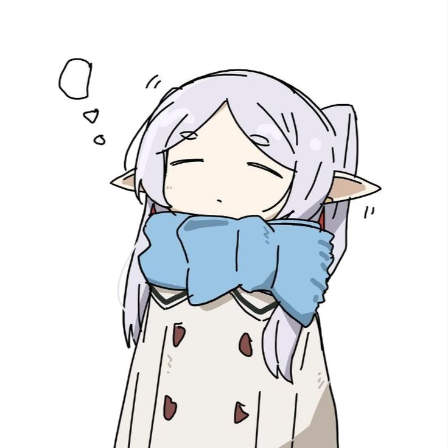

Catbox Launcher
Personalizações do cliente Roblox.
Roblox
Abra o Roblox normalmente e clique em Detectar instalação.
Personalizações
Escolha uma categoria para começar
Alterar cursor
Escolha qual cursor quer mudar. Use uma imagem PNG do mesmo formato. O Catbox faz backup antes de substituir.
.png · Nome usado pelo Roblox: ArrowCursor.png (para a seta). Você pode escolher um PNG com outro nome: o Catbox renomeia ao aplicar.Importante: o Roblox pode usar outro cursor ou restaurar o arquivo após uma atualização. A alteração não é garantida.Alterar fonte experimental
Uma fonte, um botão. O Catbox altera apenas famílias de fonte de interface compatíveis, sem mexer em fontes de emojis, idiomas ou Roblox Studio.
.ttf ou .otf. Não precisa renomear.Uma única fonte será aplicada a BuilderSans (.otf) e SourceSansPro (.ttf). Experimental: não há conversão real entre formatos; o Roblox pode rejeitar arquivos com extensão diferente do conteúdo. Fontes de ícones e emojis são preservadas.Procurando fontes compatíveis...Fonte selecionada
Nenhuma fonte selecionada
Escolha uma fonte .ttf ou .otf. O Catbox tentará aplicá-la às duas famílias. Se o Roblox apresentar erros, use Restaurar fontes originais.
Restaurar padrão
Desfaça alterações feitas pelo Catbox usando os backups guardados no computador.
Verificando backups...
O Catbox não apaga seus arquivos de backup ao encontrar conflitos.
Ajuda
Como personalizar?
Escolha Cursor ou Fontes para personalizar arquivos locais. O Catbox salva o original automaticamente.
Preciso renomear meus arquivos?
Não. Escolha um PNG para cursores ou TTF/OTF para fontes. O Catbox mantém os nomes dos arquivos originais.
O cursor não mudou. Por quê?
O Roblox pode carregar outro cursor ou ignorar arquivos locais. Confirme que reiniciou o Roblox. Se não funcionar, restaure o original.
Não gostei da alteração. E agora?
Entre em Restaurar padrão. O Catbox guarda cópias dos arquivos antes de alterá-los.
O Roblox continua aberto em segundo plano?
Na página inicial, clique em Encerrar Roblox. O Catbox pede confirmação e encerra somente processos RobloxPlayerBeta.exe da instalação oficial detectada. Isso fecha o jogo sem salvar o progresso atual.
O Roblox atualizou?
Uma atualização pode desfazer as mudanças. O Catbox evita sobrescrever arquivos atualizados sem confirmação.